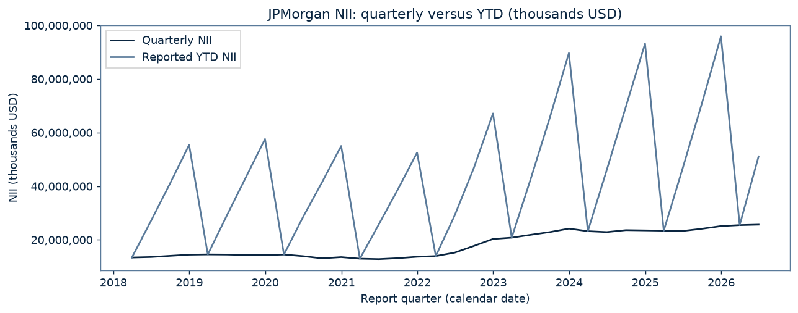
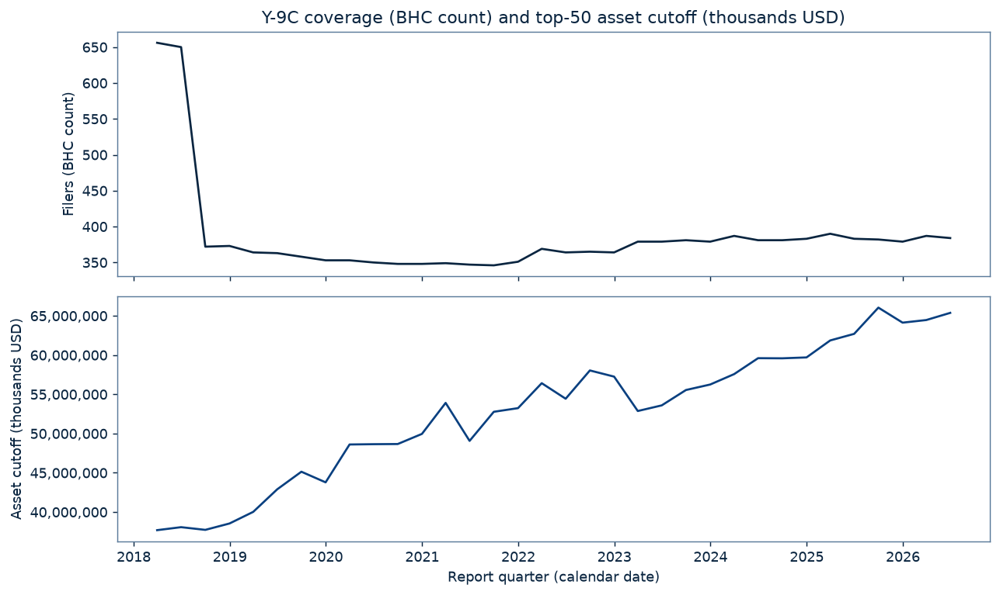
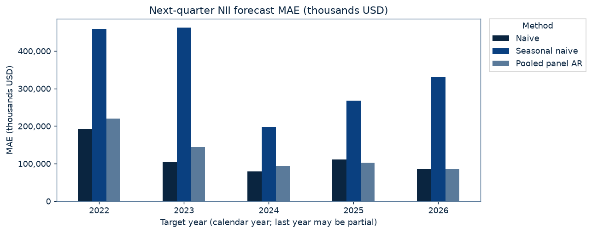
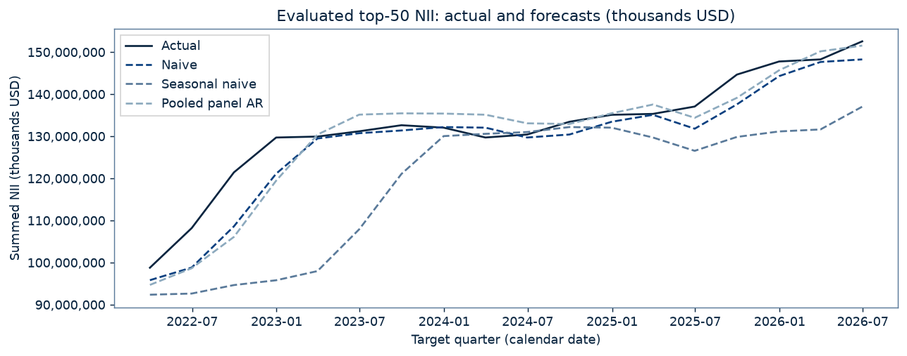

Question and design
Can pooled historical NII growth improve on simple next-quarter forecasts? The single target is net interest income (BHCK4074), the difference between interest income and interest expense, de-cumulated from calendar-year YTD to quarterly flows. All monetary values are thousands of USD. The corrected mapping is BHCK4107 − BHCK4073 = BHCK4074. The identity holds across 13,095 comparable rows, with maximum discrepancy 0 thousand USD.
At each origin t, rank BHCs by reported total assets (BHCK2170) at t and take the largest 50; break asset ties by RSSD ID. Historical training membership uses this same rule at each historical origin. Future assets and membership never select the origin universe. Forecast y(t+1) using only report quarters through t. This is a report-quarter backtest with currently downloaded filings, not a real-time filing-vintage backtest: reporting lags and later revisions are not modeled.
The test window was fixed a priori: target quarters 2022Q1–2026Q2, origins 2021Q4–2026Q1. Roughly 3.5 initial years are reserved for burn-in. The models, universe, test window and headline metrics are unchanged; MdAPE is a supplementary post-review diagnostic.
Methods
- Naive: ŷ(t+1) = y(t).
- Seasonal naive: ŷ(t+1) = y(t−3), the same quarter last year.
- Pooled panel AR: g(s) = log y(s) − log y(s−1); g(s+1) = a + b1 g(s) + b4 g(s−3). Expanding pooled OLS with an intercept, refitted at every origin using historical top-50 rows with s+1 ≤ t and positive required NII values. Forecast y(t) × exp(predicted growth). Missing/nonpositive log inputs trigger a naive fallback. No clipping, regularization, weighting, or parameter tuning.
All three methods share 893 evaluated forecasts per method over 18 target quarters. Of 900 selected origin–BHC pairs, 6 lack reported/de-cumulated next-quarter NII (including exits/mergers), and 1 additional pairs lack current or seasonal history. These are disjoint drop counts; a missing target is not proof of a merger. There are 21 AR fallbacks among evaluated cases.
Forecast errors
Equal weight per evaluated BHC-quarter. MAE and RMSE are in thousands USD; MAPE is the mean absolute error divided by absolute actual NII, in percent. 0 zero actuals are excluded from MAPE and supplementary MdAPE. All other comparisons use the same intersection of cases.
Overall metric winners: MAE: Naive; RMSE: Naive; MAPE: Naive. These are the observed results, including baseline wins.
MdAPE (median absolute percentage error, %): supplementary, added after observing MAPE outliers; does not replace MAPE. It uses the same absolute percentage errors and zero-actual exclusion as MAPE. Its winner is reported separately: Naive.
MAPE is driven by a few foreign-bank IHCs with near-zero or negative NII, including BNP Paribas USA, Mizuho Americas and Credit Suisse USA. There are 10 nonpositive actuals among 893 evaluated cases. BNP Paribas USA's 2022Q1 naive absolute percentage error is about 3,350%. The notebook shows the ten largest naive percentage errors; no cases are removed.
| Method | Forecasts (count) | MAE (thousands USD) | RMSE (thousands USD) | MAPE (%) | Percentage-error cases (count) | MdAPE (%, supplementary) |
|---|---|---|---|---|---|---|
| Naive | 893 | 117,823 | 275,791 | 13.082 | 893 | 3.453 |
| Seasonal naive | 893 | 345,029 | 767,684 | 33.802 | 893 | 10.740 |
| Pooled panel AR | 893 | 134,049 | 303,111 | 14.020 | 893 | 4.267 |
Is naive's edge over pooled AR distinguishable from noise?
At the 5% level, naive's lower absolute-error loss is statistically distinguishable from zero (t = -2.467, df = 17, p = 0.0246); naive's lower squared-error loss is statistically distinguishable from zero (t = -2.124, df = 17, p = 0.0486).
Paired Diebold–Mariano loss differential: L(naive) − L(pooled AR), with error = forecast − actual. Negative values favor naive. All 893 matched cases are included. Standard errors cluster by target quarter to absorb cross-sectional correlation within a quarter, using the CR1 correction G/(G−1) and a Student t(G−1) reference distribution. One-step forecasts are assumed to have no serial dependence across quarters beyond what is captured; this test does not adjust for correlation between quarters. The stated significance threshold is 5%.
| Scope | Loss / differential units | n | G | Mean loss differential | Cluster-robust SE | Cluster-robust t | df | Two-sided p | Favored method | Inference |
|---|---|---|---|---|---|---|---|---|---|---|
| full | Absolute error (thousands USD) | 893 | 18 | -16,225 | 6,577 | -2.4668 | 17 | 0.0246 | Naive | cluster-robust t, df=G-1 |
| full | Squared error ((thousands USD)²) | 893 | 18 | -15,815,555,434 | 7,446,160,561 | -2.1240 | 17 | 0.0486 | Naive | cluster-robust t, df=G-1 |
By target year
The final year may be partial. Per-year results (including pooled AR's 2025 and 2026 wins) are descriptive only: 4 clusters per year (2 in 2026), so clustered inference is weak (df=3) or essentially undefined (df=1).
| Target year | Method | Forecasts (count) | MAE (thousands USD) | RMSE (thousands USD) | MAPE (%) | Percentage-error cases (count) | MdAPE (%, supplementary) |
|---|---|---|---|---|---|---|---|
| 2022 | Naive | 198 | 192,430 | 414,746 | 31.854 | 198 | 8.073 |
| 2022 | Seasonal naive | 198 | 458,286 | 917,090 | 79.484 | 198 | 19.506 |
| 2022 | Pooled panel AR | 198 | 219,620 | 467,761 | 33.567 | 198 | 9.402 |
| 2023 | Naive | 199 | 104,898 | 213,573 | 8.634 | 199 | 3.981 |
| 2023 | Seasonal naive | 199 | 462,896 | 1,027,732 | 24.441 | 199 | 15.751 |
| 2023 | Pooled panel AR | 199 | 144,051 | 244,311 | 10.973 | 199 | 6.261 |
| 2024 | Naive | 200 | 79,490 | 159,863 | 6.254 | 200 | 2.619 |
| 2024 | Seasonal naive | 200 | 198,306 | 359,477 | 15.642 | 200 | 7.815 |
| 2024 | Pooled panel AR | 200 | 94,571 | 202,791 | 6.480 | 200 | 2.758 |
| 2025 | Naive | 198 | 110,835 | 294,096 | 10.254 | 198 | 2.823 |
| 2025 | Seasonal naive | 198 | 268,043 | 619,879 | 26.317 | 198 | 7.587 |
| 2025 | Pooled panel AR | 198 | 102,579 | 287,348 | 10.151 | 198 | 2.253 |
| 2026 | Naive | 98 | 85,686 | 161,297 | 3.833 | 98 | 2.239 |
| 2026 | Seasonal naive | 98 | 331,839 | 697,178 | 12.697 | 98 | 9.134 |
| 2026 | Pooled panel AR | 98 | 84,997 | 152,253 | 3.922 | 98 | 2.352 |
- 2022: MAE: Naive; RMSE: Naive; MAPE: Naive.
- 2023: MAE: Naive; RMSE: Naive; MAPE: Naive.
- 2024: MAE: Naive; RMSE: Naive; MAPE: Naive.
- 2025: MAE: Pooled panel AR; RMSE: Pooled panel AR; MAPE: Pooled panel AR.
- 2026: MAE: Pooled panel AR; RMSE: Pooled panel AR; MAPE: Naive.
Supplementary MdAPE winners by target year:
- 2022: Naive.
- 2023: Naive.
- 2024: Naive.
- 2025: Pooled panel AR.
- 2026: Naive.
Per-year DM comparisons — descriptive only
| Scope | Loss / differential units | n | G | Mean loss differential | Cluster-robust SE | Cluster-robust t | df | Two-sided p | Favored method | Inference |
|---|---|---|---|---|---|---|---|---|---|---|
| 2022 | Absolute error (thousands USD) | 198 | 4 | -27,190 | 9,698 | -2.8038 | 3 | 0.0676 | Naive | descriptive only (G=4) |
| 2022 | Squared error ((thousands USD)²) | 198 | 4 | -46,786,174,302 | 24,291,046,626 | -1.9261 | 3 | 0.1497 | Naive | descriptive only (G=4) |
| 2023 | Absolute error (thousands USD) | 199 | 4 | -39,154 | 8,000 | -4.8943 | 3 | 0.0163 | Naive | descriptive only (G=4) |
| 2023 | Squared error ((thousands USD)²) | 199 | 4 | -14,074,632,511 | 6,712,706,829 | -2.0967 | 3 | 0.1270 | Naive | descriptive only (G=4) |
| 2024 | Absolute error (thousands USD) | 200 | 4 | -15,081 | 15,571 | -0.9685 | 3 | 0.4042 | Naive | descriptive only (G=4) |
| 2024 | Squared error ((thousands USD)²) | 200 | 4 | -15,568,122,459 | 12,291,160,795 | -1.2666 | 3 | 0.2947 | Naive | descriptive only (G=4) |
| 2025 | Absolute error (thousands USD) | 198 | 4 | 8,257 | 14,214 | 0.5809 | 3 | 0.6021 | Pooled panel AR | descriptive only (G=4) |
| 2025 | Squared error ((thousands USD)²) | 198 | 4 | 3,923,959,968 | 9,942,936,641 | 0.3946 | 3 | 0.7195 | Pooled panel AR | descriptive only (G=4) |
| 2026 | Absolute error (thousands USD) | 98 | 2 | 689 | 14,699 | 0.0469 | 1 | 0.9702 | Pooled panel AR | descriptive only (G=2) |
| 2026 | Squared error ((thousands USD)²) | 98 | 2 | 2,835,753,035 | 10,393,793,412 | 0.2728 | 1 | 0.8304 | Pooled panel AR | descriptive only (G=2) |
Figures




Data vintage
Coverage: 2018Q1–2026Q2, 34 quarters. Build time (UTC): 2026-09-26T04:00:45.659404+00:00. Source: FFIEC NIC Financial Data Download. Cached files are reused; first-seen timestamps are not claimed as original download times.
NIC download dates and cache provenance (UTC)
| Quarter | Downloaded / first seen (UTC) |
|---|---|
| 2018Q1 | 2026-09-26T03:35:21.592924+00:00 |
| 2018Q2 | 2026-09-26T03:35:22.829567+00:00 |
| 2018Q3 | 2026-09-26T03:35:24.017568+00:00 |
| 2018Q4 | 2026-09-26T03:35:25.264072+00:00 |
| 2019Q1 | 2026-09-26T03:35:26.389697+00:00 |
| 2019Q2 | 2026-09-26T03:35:27.576250+00:00 |
| 2019Q3 | 2026-09-26T03:35:28.865786+00:00 |
| 2019Q4 | 2026-09-26T03:35:30.118481+00:00 |
| 2020Q1 | 2026-09-26T03:35:31.266314+00:00 |
| 2020Q2 | 2026-09-26T03:35:32.472669+00:00 |
| 2020Q3 | 2026-09-26T03:35:33.610023+00:00 |
| 2020Q4 | 2026-09-26T03:35:34.811950+00:00 |
| 2021Q1 | 2026-09-26T03:35:35.926911+00:00 |
| 2021Q2 | 2026-09-26T03:35:37.131801+00:00 |
| 2021Q3 | 2026-09-26T03:35:38.252124+00:00 |
| 2021Q4 | 2026-09-26T03:35:39.440905+00:00 |
| 2022Q1 | 2026-09-26T03:35:40.570573+00:00 |
| 2022Q2 | 2026-09-26T03:35:41.782064+00:00 |
| 2022Q3 | 2026-09-26T03:35:42.886568+00:00 |
| 2022Q4 | 2026-09-26T03:35:44.064858+00:00 |
| 2023Q1 | 2026-09-26T03:35:45.236208+00:00 |
| 2023Q2 | 2026-09-26T03:35:46.451469+00:00 |
| 2023Q3 | 2026-09-26T03:35:47.607440+00:00 |
| 2023Q4 | 2026-09-26T03:35:48.846202+00:00 |
| 2024Q1 | 2026-09-26T03:35:49.981232+00:00 |
| 2024Q2 | 2026-09-26T03:35:51.184648+00:00 |
| 2024Q3 | 2026-09-26T03:35:52.316133+00:00 |
| 2024Q4 | 2026-09-26T03:35:53.546359+00:00 |
| 2025Q1 | 2026-09-26T03:35:54.724380+00:00 |
| 2025Q2 | 2026-09-26T03:35:55.899594+00:00 |
| 2025Q3 | 2026-09-26T03:35:57.068819+00:00 |
| 2025Q4 | 2026-09-26T03:35:58.312856+00:00 |
| 2026Q1 | 2026-09-26T03:35:59.488062+00:00 |
| 2026Q2 | 2026-09-26T03:36:00.652232+00:00 |
Vintage and SHA-256 metadata · Test design and origin-level counts · Overall errors CSV · By-year errors CSV · DM tests CSV · DM tests JSON
Reproduce
git clone https://github.com/jgridifier/research-lab && cd research-lab && make y9cRequires Python 3.13, venv/pip, make, and network access to NIC and the package index. The in-repository pipeline and notebook download from 2018Q1 through the latest completed quarter, build the panel, execute the notebook, and render this page. Runtime raw files and panels are ignored by git; only aggregate outputs are published.
Caveats
- RSSD IDs are used as reported, with no pro-forma merger adjustments. Entrants appear when they start filing; exiters retain their historical training rows but are not forecast after their final filing. Acquisition-related NII jumps remain in the data and can cause forecast errors.
- Q1 quarterly NII equals Q1 YTD. Q2–Q4 require the immediately previous quarter of the same calendar year, with a nonmissing value. 49 BHC-quarters lose quarterly NII for missing predecessors across the full panel. No imputation or subtraction across gaps is performed.
- There are 36 negative Q2–Q4 NII de-cumulations across the full panel; 6 follow a year in which every earlier quarter was observed and positive. These are diagnostics, not corrections or exclusions. BNP Paribas USA reported YTD NII of 1,910,303 in 2021Q3 and 192,866 in 2021Q4, implying quarterly NII of −1,717,437 thousand USD. This is consistent with a within-year consolidation-scope change or restated YTD, but the flag alone does not establish the cause. Reported data are retained as-is.
- The 2018Q3 reporting threshold increased from $1 billion to $3 billion, mainly affecting small filers. The coverage figure counts institutions with reported consolidated assets, not every record in the bulk file.
- Foreign-bank intermediate holding companies file Y-9C and may be in the top 50. Parent and subsidiary filers are not consolidated across RSSD IDs; the aggregate is a sample sum, not a non-overlapping sector total.
- Monetary values are thousands of USD. Dollar losses emphasize large institutions. MAPE can be unstable near zero or sign changes; nonpositive values cannot enter log-growth training.
- Current downloaded filings can include revisions. The latest cached quarter may be incomplete. The final test year may cover fewer than four quarters. Research only; not investment advice.